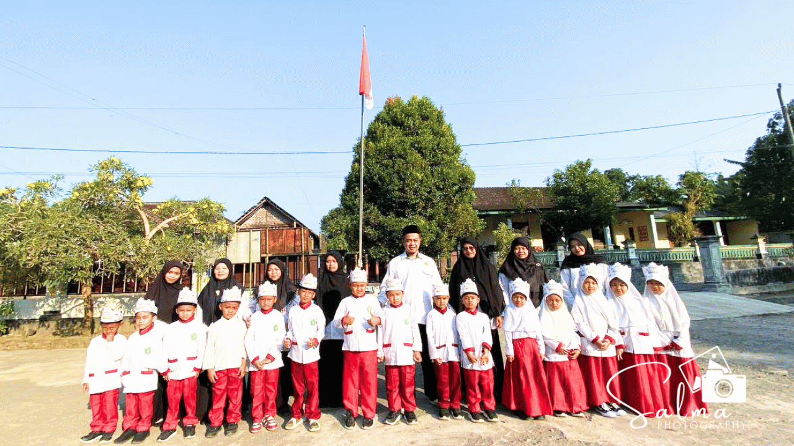

MI Salafiyatul Ma'muroh Paesan secara resmi memulai kegiatan belajar mengajar untuk Tahun Ajaran 2026/2027 dengan menyelenggarakan Masa Ta'aruf Murid Madrasah (MATAMUDA). Kegiatan yang diikuti oleh seluruh siswa baru ini dimulai pada hari Senin, 13 Juli 2026, dengan suasana penuh semangat dan keceriaan di lingkungan madrasah.
Agenda utama MATAMUDA hari pertama difokuskan pada pengenalan lingkungan madrasah agar para siswa baru dapat beradaptasi dengan cepat terhadap suasana belajar di madrasah. Para siswa diajak berkeliling area sekolah, mulai dari ruang kelas hingga berbagai fasilitas penunjang lainnya. Selain itu, kegiatan juga dimeriahkan dengan berbagai permainan (games) edukatif yang dirancang untuk membangun keakraban antar siswa dan meningkatkan rasa percaya diri mereka di lingkungan yang baru.
Kegiatan pengenalan ini bertujuan agar anak-anak merasa nyaman dan senang saat berada di madrasah sejak hari pertama mereka masuk. Pihak madrasah sangat berharap bahwa melalui pendekatan yang interaktif dan menyenangkan di awal tahun ajaran ini, para siswa dapat segera membangun ikatan emosional yang baik dengan teman sejawat maupun dengan para guru pembimbing yang akan mendampingi mereka selama di kelas nantinya.
Mengawali tahun ajaran baru dengan kegiatan yang positif seperti MATAMUDA diharapkan dapat memupuk semangat belajar yang tinggi bagi seluruh siswa sejak awal. MI Salafiyatul Ma'muroh berkomitmen untuk terus mendampingi perkembangan anak-anak tidak hanya dari segi akademik, namun juga dalam pengembangan karakter selama menempuh pendidikan di madrasah untuk mencapai masa depan yang lebih baik.
← Kembali ke Beranda